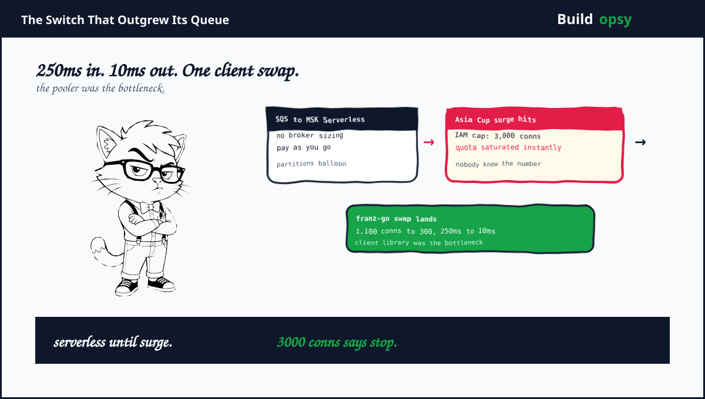

1. The Switch That Outgrew Every Queue
UPI is asynchronous by nature. Money moves through NPCI in messages, so Razorpay built the Switch around a message bus from day one. Five years later the Switch carries over 70 percent of total UPI volume with a design target of 10,000 transactions per second. Switch v2 split a monolith into event-driven microservices with separate domains for customers, merchants, VPA, payments plus mandates. Each domain scales on its own. Each domain publishes events. The bus became the architecture.
The first bus was AWS SQS Standard. It served well until two missing features mattered: true pub-sub semantics plus high-throughput low-latency delivery. SQS is a queue with fan-out bolted on. A payments switch needs the reverse. A log with subscriptions. So the team moved to AWS MSK Serverless. No broker sizing. Autoscaling without capacity planning. Pay as you go. Serverless Kafka sounded like someone else's problem. It was, until the bill plus the bottlenecks arrived together.
2. Three Bottlenecks in Five Years
The first bottleneck was partitions. Kafka is infinitely scalable in theory. In practice every partition costs CPU plus memory for metadata, file handles, replica sync plus leader election. Brokers spent more time on bookkeeping than on moving bytes. Throughput was fine. The brokers were busy counting. This is the standard partition trap. Teams add partitions for concurrency, then discover the broker tax grows faster than the parallelism pays.
The second bottleneck was the MSK Connector. To keep database writes plus Kafka publishes atomic, the team wrote events into a table plus let the connector publish them. MSK source connectors publish to exactly one configured topic. The team extended the connector with custom routing across topics based on row metadata. It crashed frequently. A connector with custom code is a microservice wearing a costume. It deserves its own deploy pipeline, its own dashboards, plus its own on-call rotation. It had none of those.
The third bottleneck was the famous one. Ahead of the Asia Cup 2025 surge, pods scaled out confidently. MSK IAM authentication caps active TCP connections near 3,000 per broker. The client library in use opened connections generously. The quota saturated almost immediately. Nobody on either side had mapped the limit. The surge plan assumed infinite headroom. The broker counted to 3,000 plus stopped accepting friendship.
The math of the fix is the best part. Replacing the generic client with franz-go, a Kafka-native Go client, dropped connections from roughly 1,100 to 300 per broker. Publish latency fell from 250ms to 10ms. That is a 73 percent connection reduction plus a 25x latency improvement from changing a library. No new brokers. No new topics. No new architecture. The bottleneck was never Kafka. It was the code talking to Kafka.
The remaining fixes show the same discipline. Worker pools per consumer decoupled processing concurrency from partition count. Sequential fetch plus parallel goroutine workers plus batch offset commits kept ordering while using CPU properly. Topic consolidation grouped domain events into shared topics with consumer-side filtering instead of one topic per event type. The gateway split into VPA, Payments plus Mandates components isolated slow 15-second validation calls from money movement. Finally the team moved to provisioned MSK with SASL/SCRAM authentication, which carries no such connection cap. Each fix removed a hidden coupling. The bill is always hiding in the coupling.
4. What Went Wrong in the Design
Serverless was adopted without a limits inventory. The team gained autoscaling plus lost visibility into quotas. Connection caps, partition behavior, plus throughput ceilings differ between Serverless plus provisioned. A migration checklist should enumerate every quota in both modes before traffic moves.
Atomicity rode on a connector. Writing business records plus events to one table plus relying on a source connector for publishing is elegant until the connector needs custom routing. At that point the elegant hack becomes an unowned service. Either keep connectors stock or promote the custom code to a real service.
Client defaults went unchallenged for years. Connection handling, batching, compression plus DNS behavior sat at library defaults while scale grew 10x around them. Client libraries are load-bearing infrastructure. They deserve the same review rigor as broker sizing.
Topics modeled events instead of domains. One topic per event type exploded partition counts plus broker bookkeeping. Grouping by domain with metadata filtering cut the tax without losing routing precision. Naming is architecture. Topic names doubly so.
5. What Should Happen Instead
First, inventory every managed-service quota before migration. Connections per broker, partitions per cluster, throughput per partition, plus auth-specific limits. Put each number in a runbook with the alert that fires at 70 percent. Surprises should be novel, not documented.
Second, pick Kafka-native clients from day one. Generic abstraction layers hide protocol features that matter at scale: DNS re-resolution, batching control, compression choice plus connection reuse. The 25x latency win here came from protocol fluency, not bigger machines.
Third, decouple concurrency from partitions. Worker pools with batch commits let one partition feed many goroutines while preserving order. Partitions then serve durability plus ordering. Workers serve speed. Mixing the two jobs created the original tax.
Fourth, isolate latency classes at the infrastructure level. Slow validation calls plus fast payment flows must never share partitions, consumers, or compute. The gateway split is the pattern. Separate deployables with separate topics plus separate consumer groups. Noisy neighbors get evicted, not tolerated.
Fifth, budget for the atomicity you give up. Removing the connector cost DB-to-Kafka atomicity. Separate writes plus publishes create windows where one succeeds without the other. Name those windows, measure them, plus build reconciliation before auditors ask.
6. The Verdict
Razorpay published one of the most honest infrastructure retrospectives of the year. Five years, three architectures, every mistake itemized with numbers. The headline lesson is unfashionable. Managed services plus good architecture still lose to client defaults plus unread quotas. The team fixed years of pain with a library swap, worker pools, topic consolidation plus an auth change. No heroics. Just measurement.
The pattern generalizes. Every team running Kafka on managed infrastructure should be able to answer three questions tonight. How many connections per broker right now. How many partitions per broker right now. What happens at 2x traffic. If any answer requires opening a console, the Asia Cup moment is already scheduled. It just needs a date.
1,100 connections. 250ms publishes. One library swap. The broker was innocent all along.
Sources and Method
This postmortem follows Razorpay Engineering's September 2026 retrospective. Numbers come from the published account. Cost framing is modeled from public AWS MSK pricing.